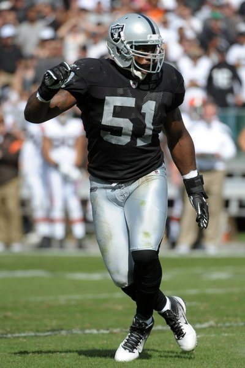
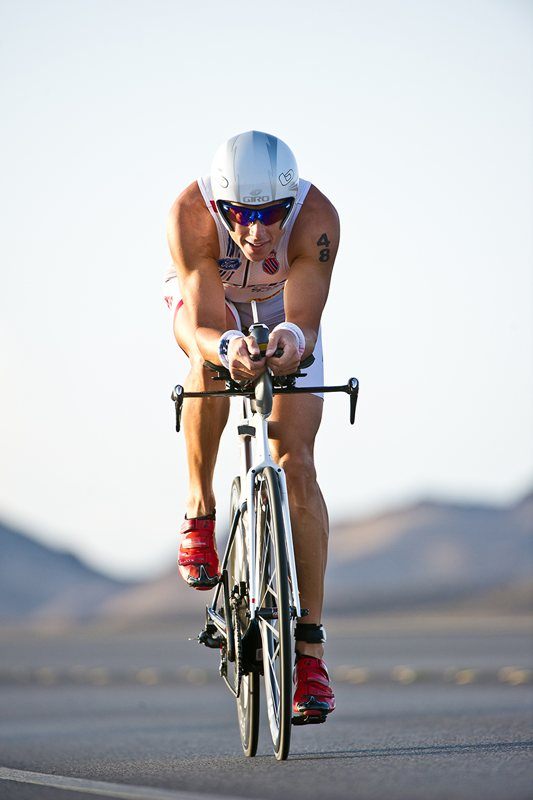
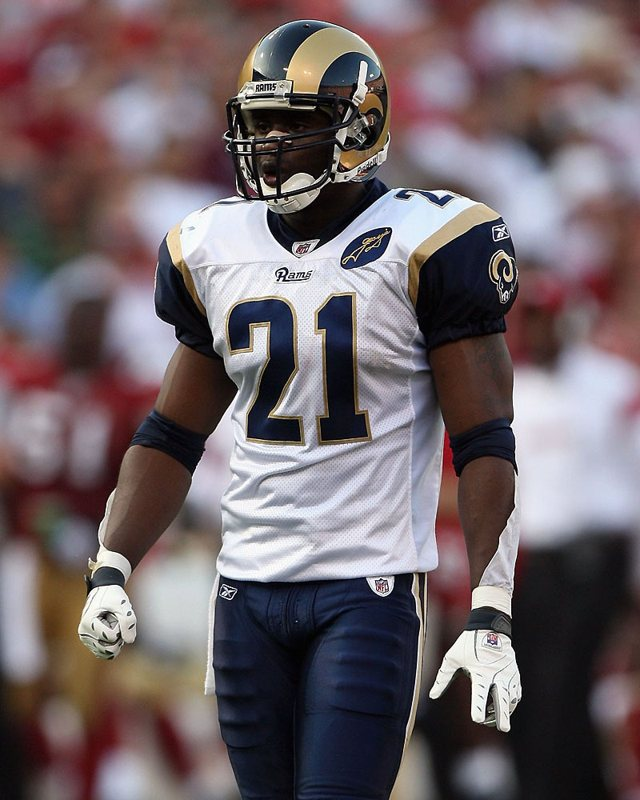

As published on trusalus.com, 2014 to 2016.

Aaron Curry
NFL linebacker, Oakland Raiders, 2012
Aaron was referred to Dr. Johnson by his sports agent in September 2012 for the treatment of chronic knee pain, inflammation, and weakness. After unsuccessfully traveling around the country seeking out the advice and treatment of several specialists to remedy his condition, his team placed him on the PUP List (physically unable to perform).
During this mandatory six week period of rest and rehabilitation, Dr. Johnson and Aaron worked together to successfully restore full mobility and strength to Aaron's knee. Dr. Johnson crafted a comprehensive rehabilitation program consisting of advanced muscle release techniques, stretching, exercise therapy, and nutrition protocols.
At the conclusion of the mandatory six week period Aaron was ready and able to join his team on the field without limitation. Aaron's success is a testament to his will to succeed and Dr. Johnson's comprehensive approach to rehabilitation.

Chris Lieto
Professional triathlete, Ironman champion
Chris Lieto has been competing at the highest levels of triathlon for many years. He is currently considered one of the top tri-athletes in the world, having finished in the top ten at the world championships in Kona, Hawaii for two consecutive years.
Chris first came to see Dr. Johnson in the summer of 2006 after competing in a week long cycling competition. Chris was referred to Dr. Johnson by his manager/agent Chris McCrary, who also competes in triathlon and thought Chris could benefit from Dr. Johnson's unique approach to sports therapy. After Chris' initial treatment sessions, he experienced immediate benefits with the elimination of some nagging injuries, improved recovery time from training, increased flexibility and enhanced performance. Chris was so excited about his results that he flew Dr. Johnson to Hawaii to work on him in the weeks prior to his 2006 World Championships. Chris went on to post his best ever finish of 9th in the world and first American at Kona! In 2007, Chris followed up the 2006 performance with another personal best, finishing 6th in the world.
Chris and Dr. Johnson now work together on a regular basis to keep Chris at his best as he continues his journey to finish first at Kona in 2008. For more information about Chris and his amazing story, please go to www.ChrisLieto.com

O.J. Atogwe
NFL safety, St. Louis Rams
OJ utilizes Dr. Johnson's comprehensive therapeutic approach to maximize his athletic potential. As a professional football player, OJ knows his performance is dependent upon maintaining full mobility and strength. OJ feels Dr. Johnson's treatment techniques help him recover faster and prevent future injury.
Every testimonial Dr. Johnson has published, in the patients' own words, from the Danville practice in 2005 to the Warriors locker room in 2025. Each one was published on one of his websites at the time; archive copies are on file.
Two years of acute hip pain, three months of physical therapy, anti-inflammatories and tests, and an offer of cortisone injections. On the day of her first injection a shop owner in Danville's Town and Country Center sent her a few doors down to Dr. Johnson. He asked for six to eight sessions and advised her to hold off on the cortisone. After eight sessions of Neuromuscular Reeducation she was pain free with full mobility, and took up triathlon. (movepastyourpain.com, 2006)